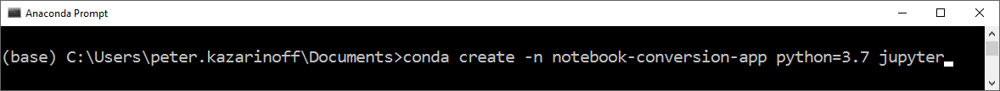
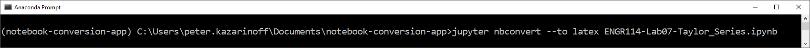
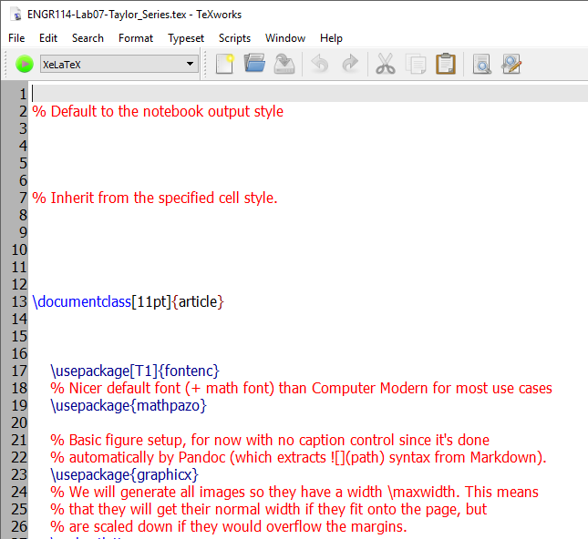
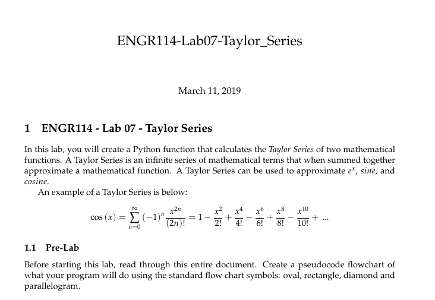
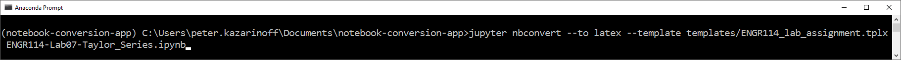
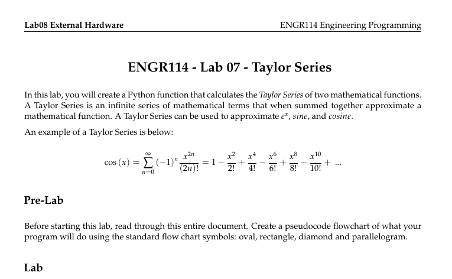

In this post, we will run through how to build a Jupyter Notebook conversion App with PyInstaller, nbconvert and Gooey. The reason I wanted to build this App is that I write and save the lab instructional materials for one of my courses in Jupyter Notebooks. But I need to post .pdf's for students to read, not .ipynb notebook files. Therefore, I need to be able to convert the Jupyter notebooks into .pdf's. Jupyter created an nbconvert utility which converts Jupyter notebooks to .pdf's, but the template used by default does not produce course materials in the proper format.
I built a GUI app with a Python package called Gooey to assist with the process, but each time I need to convert a Jupyter notebook to a .pdf, I have to:
- open the Anaconda Prompt
- activate a virtual environment
- run the proper Python file
It would be more convenient to click on a .exe file and run the notebook converted in one step. This post details the process I used to create a Windows app (a .exe file) that converts Jupyter notebook .ipynb files into .tex files.
- Converting .ipynb files to .tex files using nbconvert
- Use a custom template with nbconvert
- A Python script that converts .ipynb file to .tex
- A Python scirpt that accepts command line arguments to convert .ipynb files to .tex files
- A Gui App built with Gooey to convert .ipynb file to .tex
- A windows pyinstaller .exe app that converts .ipynb files to .tex files
- Summary
Converting .ipynb files to .tex files using nbconvert
First, let's convert a Jupyter notebook (a .ipynb-file) to LaTeX (a .tex-file) using the nbcovert command-line utility. The notebook I'm converting is from my ENGR114 Engineering Programming class. You can find the notebook on GitHub here. nbconvert is a package that gets installed when you install Jupyter into a Python virtual environment. So to get this processes started, let's create a new virtual environment using the Anaconda Prompt. I've written a post on Creating a virtual environment with conda if you are interested in the process.
To create a new virtual environmnet with the Anaconda Prompt, open the Anaconda Prompt and type the command below. Note the prompt character > should not be typed. > is shown to indicate the Anaconda Prompt, not as a character for a user to enter.
> conda create -n notebook-conversion-app python=3.7 jupyter nbconvert

Type y for yes when prompted.
Next, activate the new virtual environment called (notebook-conversion-app) with the command below.
> conda activate notebook-conversion-app
(notebook-conversion-app)
Note that when the (notebook-conversion-app) environment is active, you see the text (notebook-conversion-app) in parenthesis before the prompt >.
Now we'll use nbconvert to convert our Jupyter notebook .ipynb-file to a LaTeX .tex-file. Ensure the Jupyter notebook you are trying to convert is in the current working directory of the Anaconda Prompt. You can also write the full file path to the notebook. The nbconver docs show which commands to use, and what file types a Jupyter notebook can be converted to. To convert the notebook to a .tex-file, type the command below at the Anaconda Prompt.
(notebook-conversion-app) > jupyter nbconvert --to latex ENGR114-Lab07-Taylor_Series.ipynb

The resulting .tex-file is produced in the current working directory. When I open the .tex-file with TeXworks, the .tex-file looks something like below:

When TeXworks is used to generate a .pdf from the .tex-file. The results lok something like below:

The compilation to .pdf works just fine, but the resulting .pdf file looks kind of funny. The date is listed after the title, there isn't a header and the sections are numbered. Let's see if we can improve the look of the .pdf document using a custom template.
Use a custom template with nbconvert
Since I want the final .pdf to look different than the output produced by the nbconvert command when no template is listed, I need to create a custom template to point nbconvert to. I built a set of custom templates here. We can point nbconvert to these custom templates with the command below.
(notebook-conversion-app) > jupyter nbconvert --to latex --template templates/ENGR114_lab_assignment.tplx ENGR114-Lab07-Taylor_Series.ipynb

After the resulting .tex-file is created, the .tex-file can be opened in TeXworks and converted to .pdf. The compiled .pdf using the custom template looks something like below:

The resulting .pdf looks great, but calling the long command from the Anaconda Prompt is sort of a pain in the butt. Plus I would need to refer back to the nbconvert documentation each time I wanted to convert a notebook to another file format. To get around this problem, I wrote a Python script that completes the same conversion.
A Python script that converts .ipynb file to .tex
The Python scirpt that runs the same operation can be found on GitHub here. The "meat" of the script is in a few commands shown below:
nb_filepath = Path('ENGR114-Lab07-Taylor_Series.ipynb')
nbnode = file_to_nbnode(nb_filepath)
export_nbnode(nbnode, outfile_Path, pdf=False, template_file=template_file_Path)
The first line above takes in the .ipyn-file and converts it into a nbnode object. Next the export_nbnode() function converts the nbnode object into a .tex-file. template_file= is a keyword argument and we point it to our lab template.
This works. The .ipynb-file we hard coded in the script is converted to a .tex-file. The problem is that we need to hard code in the notebook file path each time we want to convert a different notebook. We can solve this problem by using Python's argparse library and turning our Python script into a command-line utility.
A Python scirpt that accepts command line arguments to convert .ipynb files to .tex files
A Gui App built with Gooey to convert .ipynb file to .tex
A windows pyinstaller .exe app that converts .ipynb files to .tex files
Summary
In this post...